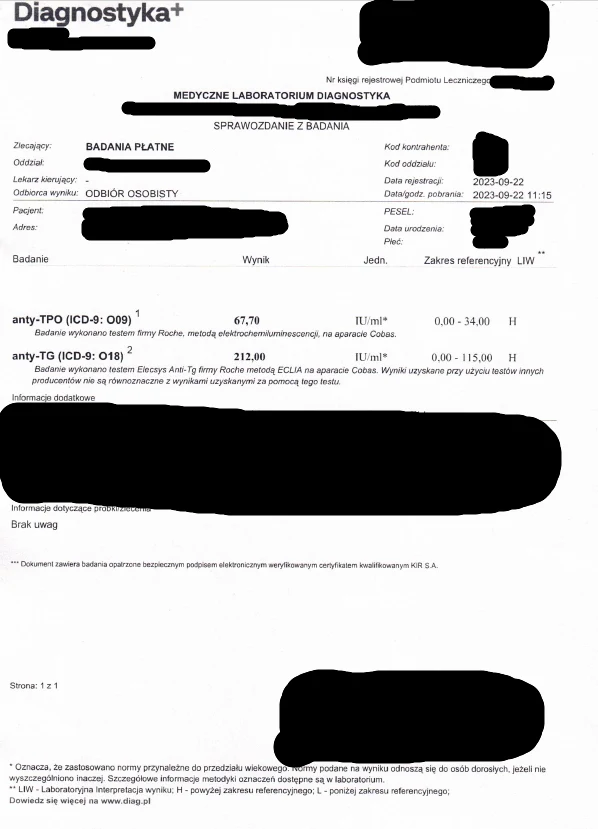
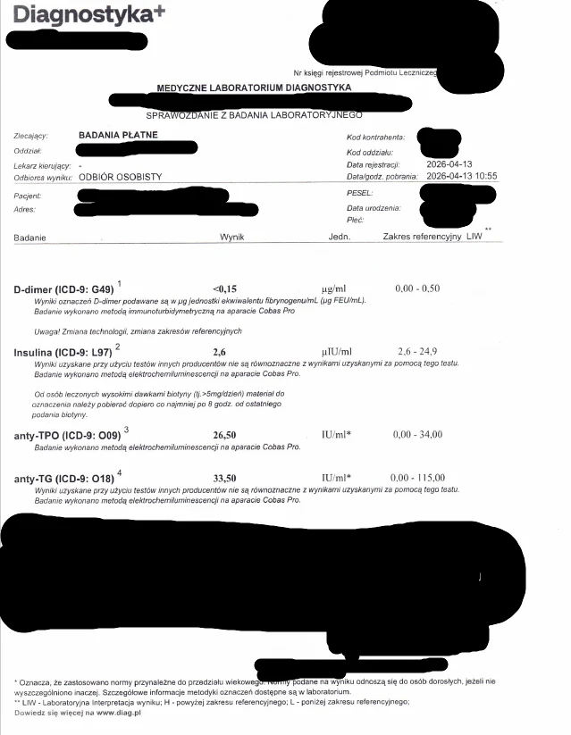
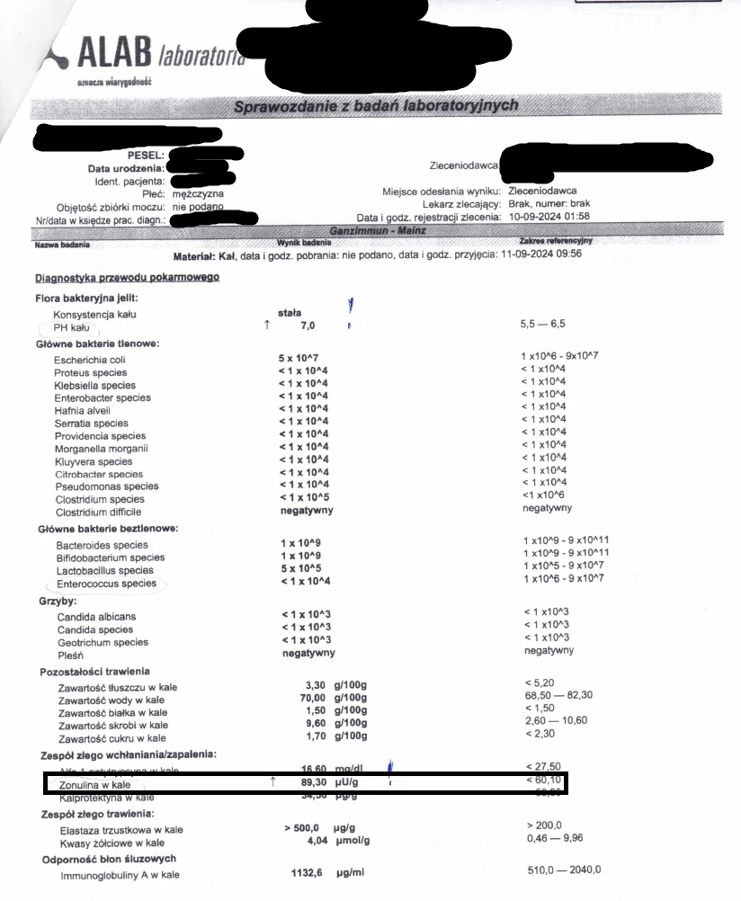
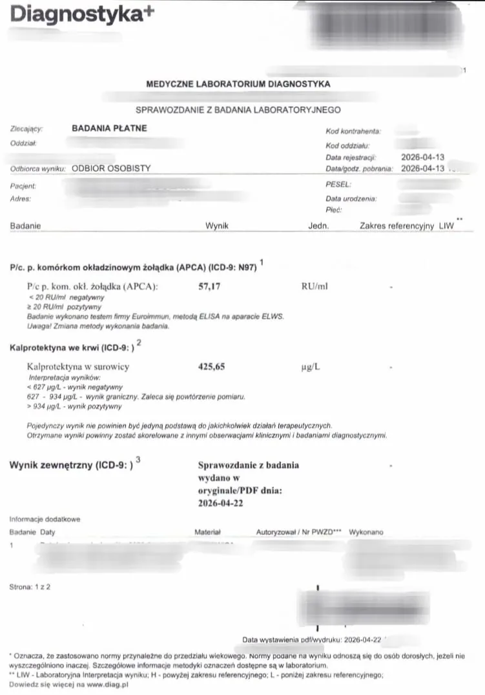
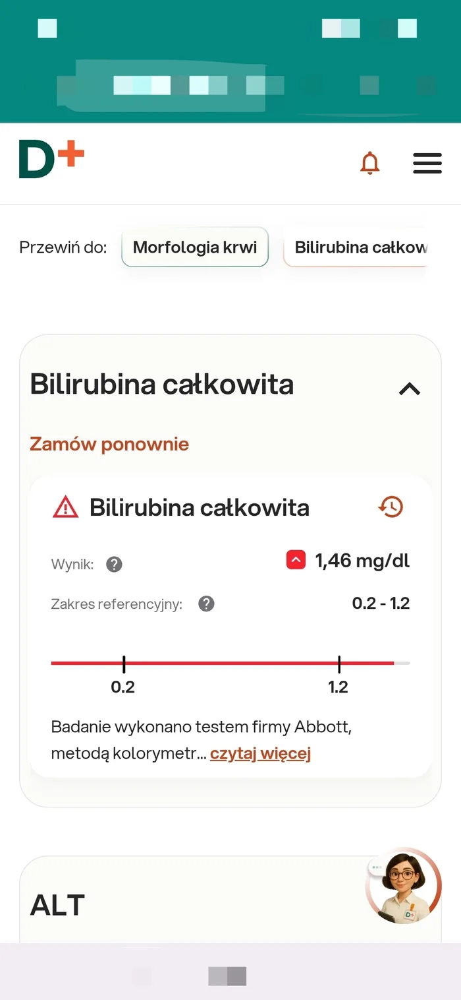
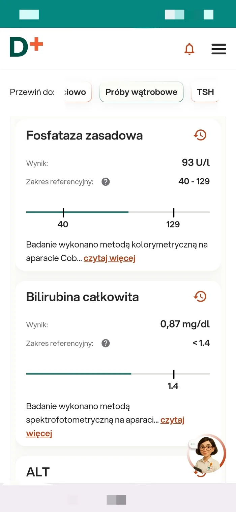
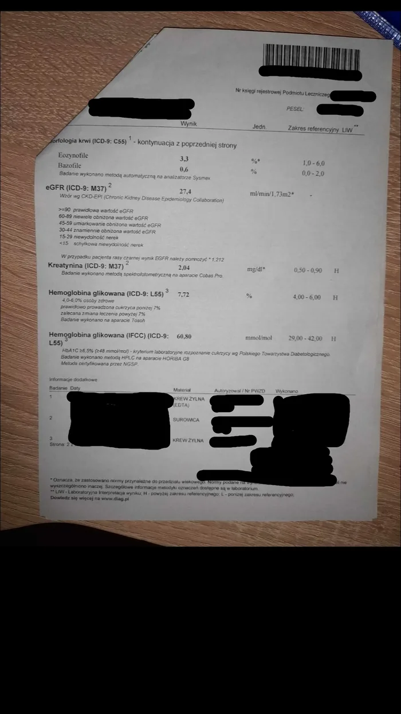
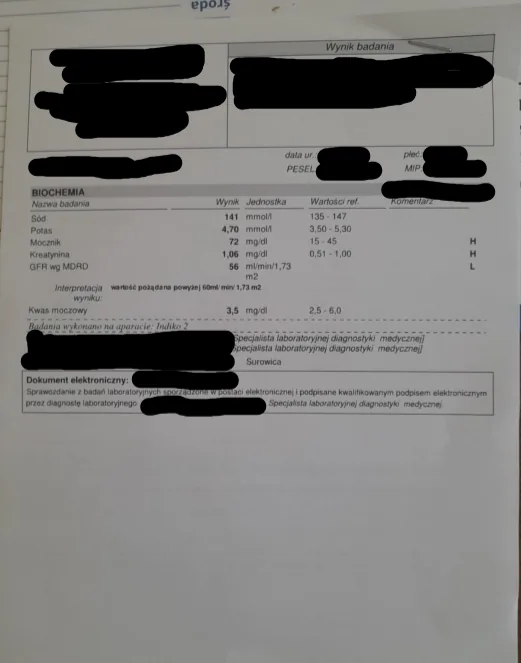

Strona główna / Rezultaty
RezultatyRealne wyniki
w badaniach krwi
Przykładowe, udokumentowane przypadki poprawy parametrów krwi u podopiecznych. Zdjęcia badań laboratoryjnych publikowane za zgodą podopiecznych.
Podopieczny zgłosił się z Hashimoto i niedoczynnością tarczycy, podwyższonymi przeciwciałami tarczycowymi, podwyższonymi D-dimerami oraz cechami zwiększonej przepuszczalności jelitowej (zonulina/kalprotektyna) i towarzyszącymi stanami zapalnymi. W trakcie długofalowej konsultacji i stosowania indywidualnie dobranych ziół, żywienia przeciwzapalnego oraz suplementacji celowanej, kolejne kontrolne badania wykazały stopniową poprawę wszystkich czterech parametrów.





Zonulina i kalprotektyna to różne markery badane w różnych laboratoriach, ale obie służą do oceny przepuszczalności jelit i stanu zapalnego przewodu pokarmowego — dlatego traktujemy je tu jako parametry porównywalne w ocenie tego samego problemu.
Podopieczny zgłosił się z podwyższoną bilirubiną i obciążoną wątrobą. W trakcie konsultacji i stosowania indywidualnie dobranych ziół, żywienia wspierającego wątrobę oraz suplementacji celowanej, kontrolne badanie po około półtora miesiąca wykazało powrót parametru do normy.


Podopieczna miała nieprawidłowe wartości kreatyniny oraz wskaźnika filtracji kłębuszkowej (GFR). Po dwóch miesiącach konsultacji i naturalnego wsparcia oba parametry wyraźnie się poprawiły w kontrolnym badaniu krwi.

